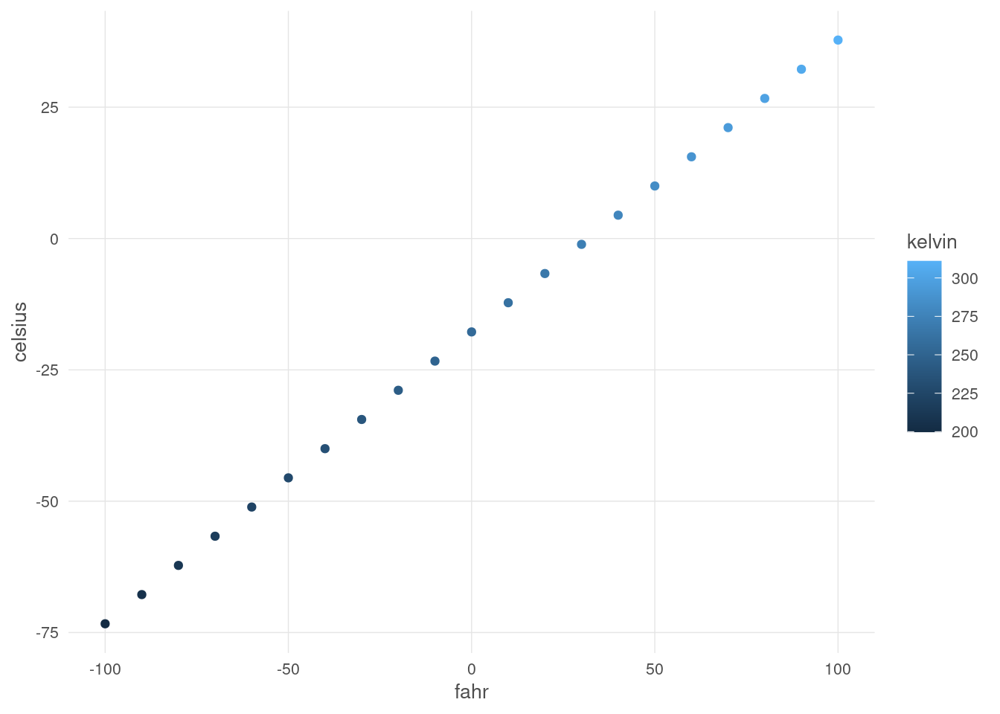
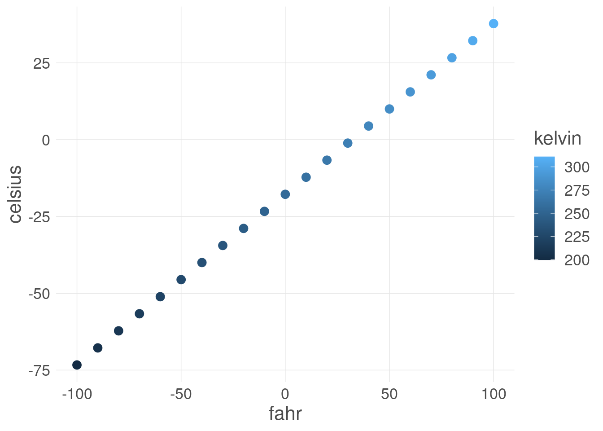

airtemps <- c(212, 30.3, 78, 32)
celsius1 <- (airtemps[1]-32)*5/9
celsius2 <- (airtemps[2]-32)*5/9
celsius3 <- (airtemps[3]-32)*5/9Learning Objectives
- Learn why we should write code in small functions
- Write code for one or more functions
- Document functions to improve understanding and code communication
15.1 Creating R Functions
Many people write R code as a single, continuous stream of commands, often drawn from the R Console itself and simply pasted into a script. While any script brings benefits over non-scripted solutions, there are advantages to breaking code into small, reusable modules. This is the role of a function in R. In this lesson, we will review the advantages of coding with functions, practice by creating some functions and show how to call them, and then do some exercises to build other simple functions.
15.1.1 Why functions?
In a word:
- DRY: Don’t Repeat Yourself
By creating small functions that only one logical task and do it well, we quickly gain:
- Improved understanding
- Reuse via decomposing tasks into bite-sized chunks
- Improved error testing
Temperature conversion
Imagine you have a bunch of data measured in Fahrenheit and you want to convert that for analytical purposes to Celsius. You might have an R script that does this for you.
Note the duplicated code, where the same formula is repeated three times. This code would be both more compact and more reliable if we didn’t repeat ourselves.
Creating a function
Functions in R are a mechanism to process some input and return a value. Similarly to other variables, functions can be assigned to a variable so that they can be used throughout code by reference. To create a function in R, you use the function function (so meta!) and assign its result to a variable. Let’s create a function that calculates celsius temperature outputs from fahrenheit temperature inputs.
fahr_to_celsius <- function(fahr) {
celsius <- (fahr-32)*5/9
return(celsius)
}By running this code, we have created a function and stored it in R’s global environment. The fahr argument to the function function indicates that the function we are creating takes a single parameter (the temperature in fahrenheit), and the return statement indicates that the function should return the value in the celsius variable that was calculated inside the function. Let’s use it, and check if we got the same value as before:
celsius4 <- fahr_to_celsius(airtemps[1])
celsius4[1] 100celsius1 == celsius4[1] TRUEExcellent. So now we have a conversion function we can use. Note that, because most operations in R can take multiple types as inputs, we can also pass the original vector of airtemps, and calculate all of the results at once:
celsius <- fahr_to_celsius(airtemps)
celsius[1] 100.0000000 -0.9444444 25.5555556 0.0000000This takes a vector of temperatures in fahrenheit, and returns a vector of temperatures in celsius.
Challenge
Now, create a function named celsius_to_fahr that does the reverse, it takes temperature data in celsius as input, and returns the data converted to fahrenheit. Then use that formula to convert the celsius vector back into a vector of fahrenheit values, and compare it to the original airtemps vector to ensure that your answers are correct. Hint: the formula for C to F conversions is celsius*9/5 + 32.
# Your code goes hereDid you encounter any issues with rounding or precision?
Solution, but don’t peek!
Don’t peek until you write your own…
# Your code goes here
celsius_to_fahr <- function(celsius) {
fahr <- celsius*9/5 + 32
return(fahr)
}
result <- celsius_to_fahr(celsius)
airtemps == result[1] TRUE TRUE TRUE TRUE15.1.2 Documenting R functions
Functions need documentation so that we can communicate what they do, and why. The roxygen2 package provides a simple means to document your functions so that you can explain what the function does, the assumptions about the input values, a description of the value that is returned, and the rationale for decisions made about implementation.
Documentation in ROxygen is placed immediately before the function definition, and is indicated by a special comment line that always starts with the characters #'. Here’s a documented version of a function:
#' Convert temperature data from Fahrenheit to Celsius
#'
#' @param fahr Temperature data in degrees Fahrenheit to be converted
#' @return temperature value in degrees Celsius
#' @keywords conversion
#' @export
#' @examples
#' fahr_to_celsius(32)
#' fahr_to_celsius(c(32, 212, 72))
fahr_to_celsius <- function(fahr) {
celsius <- (fahr-32)*5/9
return(celsius)
}Note the use of the @param keyword to define the expectations of input data, and the @return keyword for defining the value that is returned from the function. The @examples function is useful as a reminder as to how to use the function. Finally, the @export keyword indicates that, if this function were added to a package, then the function should be available to other code and packages to utilize.
15.1.3 Summary
- Functions are useful to reduce redundancy, reuse code, and reduce errors
- Build functions with the
functionfunction - Document functions with
roxygen2comments
15.1.4 Examples: Minimizing work with functions
Functions can of course be as simple or complex as needed. They can be be very effective in repeatedly performing calculations, or for bundling a group of commands that are used on many different input data sources. For example, we might create a simple function that takes fahrenheit temperatures as input, and calculates both celsius and Kelvin temperatures. All three values are then returned in a list, making it very easy to create a comparison table among the three scales.
convert_temps <- function(fahr) {
celsius <- (fahr-32)*5/9
kelvin <- celsius + 273.15
return(list(fahr=fahr, celsius=celsius, kelvin=kelvin))
}
temps_df <- data.frame(convert_temps(seq(-100,100,10)))Once we have a dataset like that, we might want to plot it. One thing that we do repeatedly is set a consistent set of display elements for creating graphs and plots. By using a function to create a custom ggplot theme, we can enable to keep key parts of the formatting flexible. FOr example, in the custom_theme function, we provide a base_size argument that defaults to using a font size of 9 points. Because it has a default set, it can safely be omitted. But if it is provided, then that value is used to set the base font size for the plot.
custom_theme <- function(base_size = 9) {
ggplot2::theme(
text = ggplot2::element_text(family = 'Helvetica', color = 'gray30', size = base_size),
plot.title = ggplot2::element_text(size = ggplot2::rel(1.25), hjust = 0.5, face = 'bold'),
panel.background = ggplot2::element_blank(),
panel.border = ggplot2::element_blank(),
panel.grid.minor = ggplot2::element_blank(),
panel.grid.major = ggplot2::element_line(colour = 'grey90', linewidth = .25),
legend.position = 'right',
legend.key = ggplot2::element_rect(colour = NA, fill = NA),
axis.ticks = ggplot2::element_blank(),
axis.line = ggplot2::element_blank()
)
}
library(ggplot2)
ggplot(temps_df, mapping=aes(x=fahr, y=celsius, color=kelvin)) +
geom_point() +
custom_theme(10)
In this case, we set the font size to 10, and plotted the air temperatures. The custom_theme function can be used anywhere that one needs to consistently format a plot.
But we can go further. One can wrap the entire call to ggplot in a function, enabling one to create many plots of the same type with a consistent structure. For example, we can create a scatterplot function that takes a data frame as input, along with a point_size for the points on the plot, and a font_size for the text.
scatterplot <- function(df, point_size = 2, font_size=9) {
ggplot(df, mapping=aes(x=fahr, y=celsius, color=kelvin)) +
geom_point(size=point_size) +
custom_theme(font_size)
}Calling that let’s us, in a single line of code, create a highly customized plot but maintain flexibiity via the arguments passed in to the function. Let’s set the point size to 3 and font to 16 to make the plot more legible.
scatterplot(temps_df, point_size=3, font_size = 16)
Once these functions are set up, all of the plots built with them can be reformatted by changing the settings in just the functions, whether they were used to create 1, 10, or 100 plots.